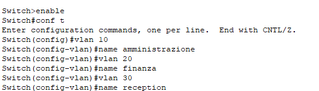
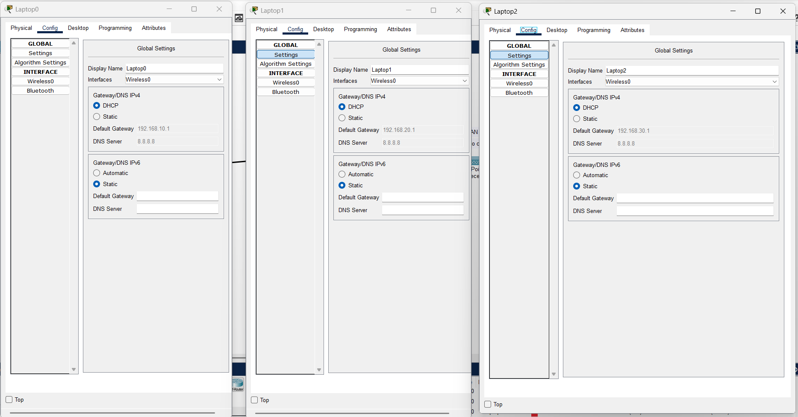

Lo scenario rappresenta una rete aziendale strutturata per supportare tre principali dipartimenti:
Amministrazione/IT (VLAN 10)
Finanza/HR (VLAN 20)
Servizio Clienti/Reception (VLAN 30)
La rete è progettata con un'infrastruttura centralizzata che include un router principale (Router1),
un switch di distribuzione (2960-24TT) e tre Access Point (AP) per la connessione wireless. Inoltre, ogni dipartimento dispone di un laptop dedicato connesso alla VLAN corrispondente.
1. Dispositivi e Collegamenti
Router
Router1 (ISR 4331)
Funziona come gateway principale della rete aziendale.
Gestisce il routing tra le VLAN e l'accesso ai servizi di rete.
Collegato direttamente allo switch di distribuzione.
Switch di Distribuzione
Switch 2960-24TT (centro)
Punto centrale della rete a cui sono collegati gli Access Point dei vari dipartimenti.
Gestisce la separazione delle VLAN e il traffico tra i diversi reparti.
Access Point e Client Wireless
La rete utilizza Access Point (AP) per la connettività wireless, collegati allo switch principale:
AP-Amministrazione (VLAN 10): Connette i dispositivi dell'Amministrazione/IT .
Laptop0: Dispositivo assegnato alla VLAN 10.
AP-Finanza (VLAN 20): Connette il dipartimento Finanza/HR .
Laptop1: Dispositivo assegnato alla VLAN 20.
AP-Reception (VLAN 30): Gestisce la connettività per il Servizio Clienti .
Laptop2: Dispositivo assegnato alla VLAN 30.
2. Configurazione delle VLAN

3. Servizi Implementati
DHCP
Il router fornisce indirizzi IP dinamici ai dispositivi wireless tramite DHCP. Ogni VLAN ha un intervallo di IP assegnato.
Routing Inter-VLAN
Configurato sul router per permettere la comunicazione tra i dipartimenti mantenendo il traffico segmentato.
Sicurezza della Rete
Implementazione di autenticazione WPA2 sugli Access Point per proteggere la rete Wi-Fi.
Firewall per filtrare il traffico non autorizzato tra le VLAN e verso l'esterno.
4. Test DHCP e Routing Inter-VLAN
Lo screenshot seguente mostra il test del DHCP, in cui un dispositivo riceve un indirizzo IP dinamico dal server DHCP:

Lo screenshot seguente mostra il test del routing, in cui viene eseguito un ping tra dispositivi appartenenti a VLAN diverse per verificare la connettività:
5. Benefici della Rete
Separazione del traffico tra i dipartimenti per maggiore sicurezza e prestazioni.
Gestione centralizzata grazie allo switch principale.
Flessibilità della connessione wireless, evitando cablaggi complessi.
Scalabilità, permettendo di aggiungere nuovi dispositivi senza impattare la rete esistente.